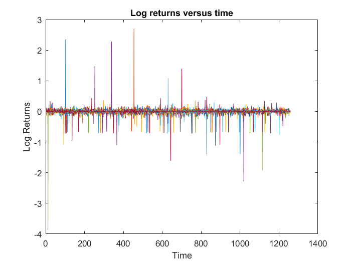
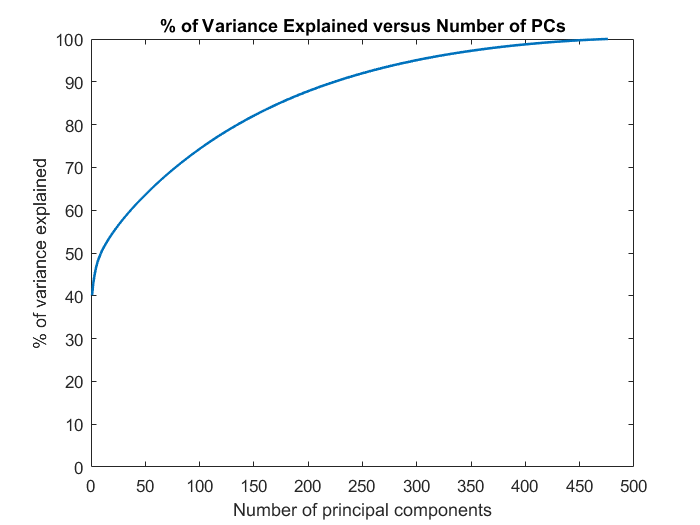
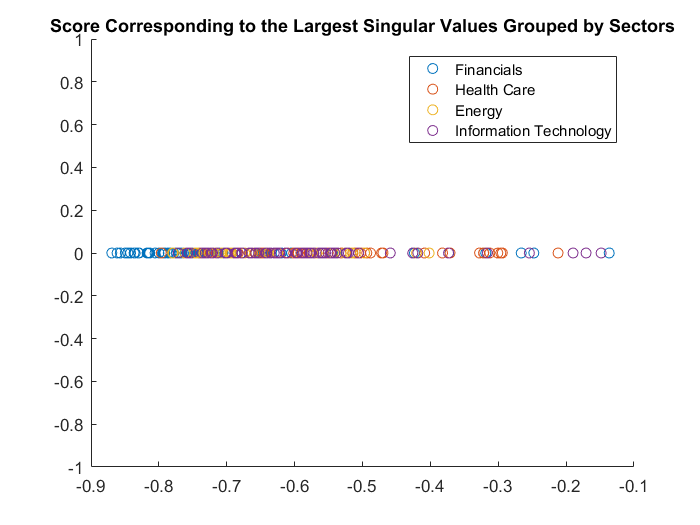
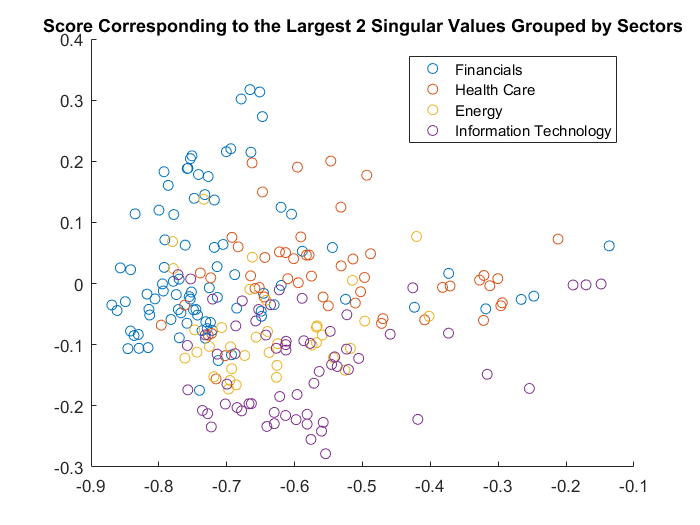
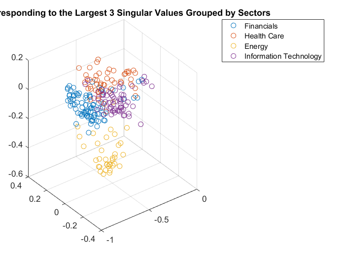

Contents
load('../data/476Stocks.mat')
1
[p, n] = size(LogReturn);
X = LogReturn;
plot(LogReturn')
xlabel('Time')
ylabel('Log Returns')
title('Log returns versus time')

2 Normalization
mu_X = nanmean(X,2);
std_X = nanstd(X,0,2);
norm2 = sqrt(n*var(X,1,2));
X_normalized = (X - repmat(mu_X,1,n))./repmat(norm2,1,n);
3 Variance Explained
[U,S,V] = svd(X_normalized,0);
X_hat = U*S*V';
D_n = S'*S;
D_p = S*S';
d = diag(D_p);
prct_var_explained = cumsum(d)./sum(d)*100;
figure
plot(prct_var_explained,'LineWidth', 1.5)
ylim([0,100])
ylabel('% of variance explained');
xlabel('Number of principal components');
title('% of Variance Explained versus Number of PCs')

4 Visualization
Score = X_normalized * V;
sectors_kept = {'Financials';'Health Care';'Energy';'Information Technology'};
figure
for i = 1:numel(sectors_kept)
this_sector = sectors_kept{i};
this_mask = strcmpi(sectors,this_sector);
scatter(Score(this_mask,1),zeros(sum(this_mask),1));
hold on
end
legend(sectors_kept)
title('Score Corresponding to the Largest Singular Values Grouped by Sectors')
figure
for i = 1:numel(sectors_kept)
this_sector = sectors_kept{i};
this_mask = strcmpi(sectors,this_sector);
scatter(Score(this_mask,1),Score(this_mask,2));
hold on
end
legend(sectors_kept)
title('Score Corresponding to the Largest 2 Singular Values Grouped by Sectors')
figure
for i = 1:numel(sectors_kept)
this_sector = sectors_kept{i};
this_mask = strcmpi(sectors,this_sector);
scatter3(Score(this_mask,1),Score(this_mask,2),Score(this_mask,3));
hold on
end
legend(sectors_kept)
title('Score Corresponding to the Largest 3 Singular Values Grouped by Sectors')
  